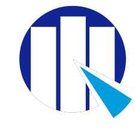

Levantamento Quantitare
ONGONG e terceiro setor
São 63 mil organizações a mais em dois anos, disputando o mesmo financiamento. Três números públicos, e o que nenhum deles mede.
Atualizado em 30 de outubro de 2026
Mais organizações, e o Centro-Oeste na frente
Valor: 879.326 OSCs ativas, contra 815.677 em 2021. Alta de 7,8%
Período: versão 2023 do Mapa
Origem: Mapa das OSCs, Ipea. Fonte principal: CNPJ
Base: organizações da sociedade civil ativas no Brasil. A contagem varia conforme a metodologia
Cerca de 63 mil organizações da sociedade civil, as OSCs, a mais em dois anos. O Centro-Oeste cresceu 11%, o dobro do Sul. A contagem muda conforme a forma de contar. Por isso ela aparece sempre com a fonte e o ano: número redondo sem origem não sustenta conversa com financiador.
Por que isso é importante para o marketing? mais organizações no mesmo edital. Quando todas passam a ter material institucional bem feito, ele para de diferenciar. O que diferencia passa a ser a prova do que mudou na vida de quem foi atendido.
A maioria não tem um único empregado formal
Valor: mais de 80% das organizações sem empregado registrado · mais de 2,5 milhões de vínculos no setor
Período: vínculos de 2024; relatório com dados até 23/05/2025
Origem: Mapa das OSCs, Ipea, relatório estatístico
Base: OSCs ativas no Brasil. O relatório publica “mais de 80%”, sem o decimal. A fatia do gráfico usa 80%
O setor emprega mais de 2,5 milhões de pessoas com carteira assinada. Mas esse emprego está concentrado numa minoria: mais de quatro em cada cinco organizações não têm nenhum empregado registrado. Duas finalidades, defesa de direitos e religião, respondem por seis em cada dez organizações do país.
Por que isso é importante para o marketing? a maior parte do setor opera com equipe voluntária, e isso define o que é realista propor. Pesquisa que depende de entrevistador na rua não cabe nessa realidade. Pesquisa feita sobre a lista de beneficiários que a organização já tem, cabe. É por isso que ela é o ponto de partida aqui.
O que ainda não está medido neste setor
Os números desta página contam quantas organizações existem e quantas pessoas elas empregam. Nenhum conta o que mudou na vida de quem foi atendido. Essa base só existe se cada projeto medir o seu, e só funciona se medir antes.
O que o financiador vai perguntar
Quantas pessoas foram atendidas, toda organização responde. O que mudou para elas é a pergunta seguinte, e é a que costuma não ter resposta, porque ninguém mediu no começo. Essa é a parte que se desenha antes de o projeto começar, e é barata quando a coleta é sobre a lista que a organização já tem.
Quer esse recorte para a sua base, e não para o país?
Tudo nesta página é dado público do setor. O que ele não diz é o que acontece dentro da sua organização, e essa parte é pesquisa, não levantamento. Antes de qualquer proposta, mandamos uma análise gravada da sua medição: um vídeo de até cinco minutos, que você assiste quando quiser e aplica sozinho se preferir.
Sem pressa e sem pressão.